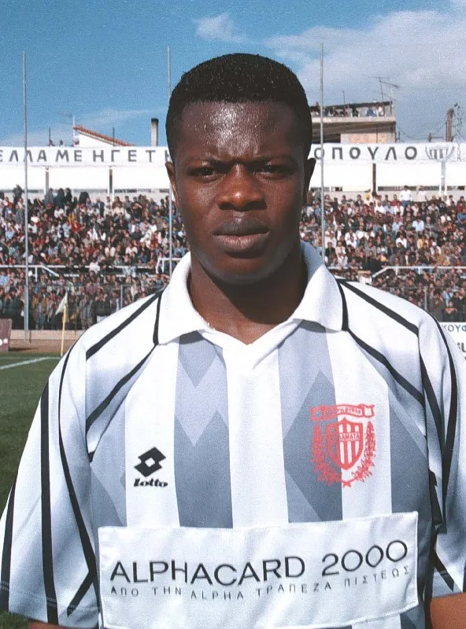
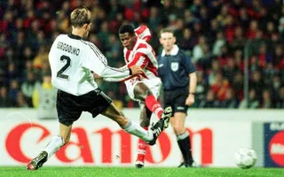

Πίτερ Οφορίκουε
Ο Πίτερ Οφορίκουε (αγγλικά: Peter Ofori-Quaye, γεννημένος στις 21 Μαρτίου 1980) είναι Γκανέζος πρώην διεθνής ποδοσφαιριστής ο οποίος αγωνιζόταν ως επιθετικός. Ο Οφορίκουε κατείχε το ρεκόρ του νεότερου σκόρερ στην ιστορία του Τσάμπιονς Λιγκ, καθώς ήταν μόλις 17 ετών και 194 ημερών όταν σκόραρε με την φανέλα του Ολυμπιακού, εναντίον της Ρόζενμποργκ στις 1 Οκτωβρίου του 1997, ρεκόρ που άντεξε μέχρι την 10η Δεκεμβρίου 2019. Είναι 32 φορές διεθνής με την Εθνική Γκάνας, ενώ έχει πετύχει και 17 γκολ.

Ο Πίτερ Οφορίκουε πέρασε τα περισσότερα χρόνια της καριέρας του στο Ελληνικό Πρωτάθλημα, στο οποίο σκόραρε 33 γκολ σε 10 σεζόν. Ήρθε στην Ελλάδα για λογαριασμό της Καλαμάτας, σε ηλικία μόλις 15 ετών. Εκείνη την περίοδο, πρόεδρος της ομάδας ήταν ο Σταύρος Παπαδόπουλος, ο οποίος συνήθιζε να φέρνει νεαρούς παίκτες - ταλέντα από την χώρα της Γκάνας, με τον Οφορίκουε να αποτελεί τον πιο υποσχόμενο παίκτη μαζί με τον Σάμουελ Τζόνσον και τον Ντέρεκ Μπόατενγκ. Στην ομάδα της Καλαμάτας πέτυχε 8 γκολ σε 34 εμφανίσεις

Στην ηλικία των 17 ετών, ο Οφορίκουε υπέγραψε στον τότε Πρωταθλητή Ελλάδος Ολυμπιακό, σε μια μεταγραφή που αποτέλεσε ρεκόρ για τον σύλλογο της Καλαμάτας, καθώς έβαλε στα ταμεία της το ποσό των 2.800.000 ευρώ. Πραγματοποίησε 80 συμμετοχές με τους "ερυθρόλευκους" έχοντας σκοράρει 24 φορές.
Ο Πίτερ Οφορίκουε, όσο αγωνιζόταν με την φανέλα του Ολυμπιακού, τράβηξε το ενδιαφέρον αρκετών ευρωπαϊκών ομάδων, καθώς σκόραρε κάποια σημαντικά τέρματα στο Τσάμπιονς Λιγκ, συμπεριλαμβανομένων και αυτών εναντίον της Ρόζενμποργκ, της Λυών και της Ντεπορτίβο Λα Κορούνια. Εξαιτίας της συνεχόμενης εναλλαγής προπονητών, ο Οφορίκουε δεν κατάφερε να καθιερωθεί στην ενδεκάδα του Ολυμπιακού, με αποτέλεσμα να μείνει τελικά ελεύθερος από την ομάδα το 2003, έχοντας προηγουμένως κατακτήσει 6 Πρωταθλήματα Ελλάδας και 1 Κύπελλο Ελλάδας, ενώ είχε βοηθήσει τον Ολυμπιακό να φτάσει στα προημιτελικά του Τσάμπιονς Λιγκ της περιόδου 1998-1999.

HIGHLIGHTS